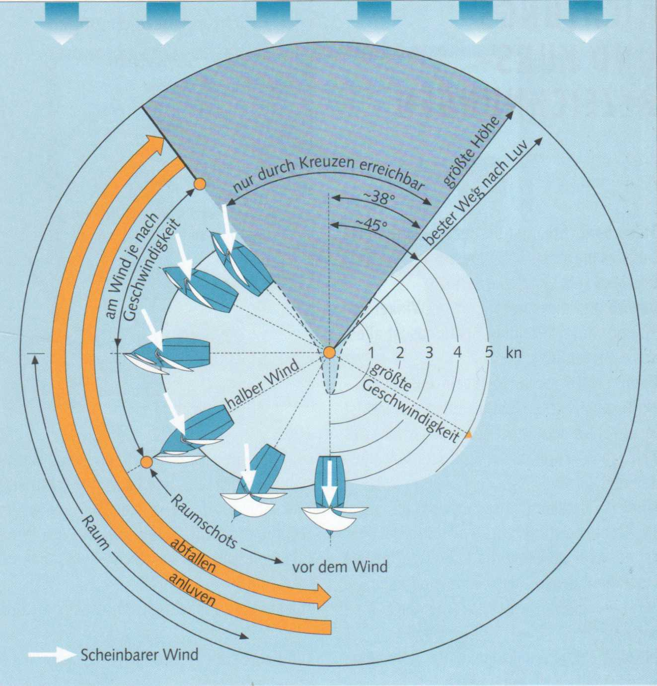

Für jedes Segelboot gibt es einen etwas unterschiedlich großen Sektor zum Wind, in dem es nicht mehr voraus segelt, sondern mit killenden (schlagenden) Segeln stehen bleibt. Liegt es genau im Wind, treibt es sogar achteraus.
Fahrtenyachten können kaum höher als bis zu 45° an den wahren Wind herangehen. Ausgefeilte Rennyachten schaffen es bis zu etwa 38° Höhe. Es gibt also einen toten Sektor von ungefähr 90° - jeweils 45° rechts und links der Windrichtung -, den ein Boot unter Segeln nicht direkt befahren kann.
Zwischen diesem Sektor und dem Segeln vor dem Wind liegen mehrere Kurse, die jeweils eine andere Segelstellung erfordern und das Setzen von verschiedenen Segeln- je nach Windstärke - ermöglichen.
Gesegelt wird nur mit dem scheinbaren Wind, der sich aus wahrem Wind und Fahrtwind zusammensetzt.

Die verschiedenen Kurse zum Wind
Die herzförmig geschwungene Linie ist die typische Geschwindigkeitskurve einer kleinen Rennyacht. Bei etwa 45° segelt sie ihre optimale Höhe. Man kann sie zwar noch bis etwa 38° an den Wind knüppeln, doch macht sie dann nur noch wenig Fahrt. Mit ungefähr halbem (scheinbarem) Wind erreichen alle Segelboote ihre maximale Geschwindigkeit. Diese hier beispielsweise 5,5 Knoten (kn = Seemeilen in der Stunde). Auf Raumschots-Kurs wird das Boot wieder langsamer, und auf Vorm-Wind-Kurs kommt es nur noch auf etwa 75 % bis 80 % seiner maximalen Geschwindigkeit.
Am Wind bedeutet die maximale Höhe, die ein Boot laufen kann. Der Winkel zwischen Kurs und einfallendem Wind ist am kleinsten, die Fahrt, die das Boot macht, aber auch nur gering.
Voll und bei ist ein Am-Wind-Kurs, auf dem das Boot nicht mehr größtmögliche Höhe schindet, aber schneller segelt und somit die optimale Höhe läuft oder, anders ausgedrückt, den besten Weg nach Luv macht. Besegelung: Großsegel und Fock bzw. Genua.
Halber Wind ist der von querab einfallende scheinbare Wind und bedeutet nicht etwa, in einem Winkel von 90° zum wahren Wind zu segeln. Auf modernen Gleitjollen kommt hier ein Gennaker zum Einsatz.
Raumer Wind weht in dem Sektor zwischen halbem und genau achterlichem Wind. Das Segeln in diesem Bereich wird als Raumschots-Kurs bezeichnet. Dies ist der perfekte Kurs für den Gennaker oder Blister.
Vor dem Wind kommt der Wind von recht achteraus. Auf diesem Kurs wird der Spinnaker gesetzt, die bunte bauchige »Blase«. Sie verleiht dem Boot erheblichen Vortrieb.
Alle diese Kurse sind spiegelgleich für Steuerbord- und Backbord-Bug.